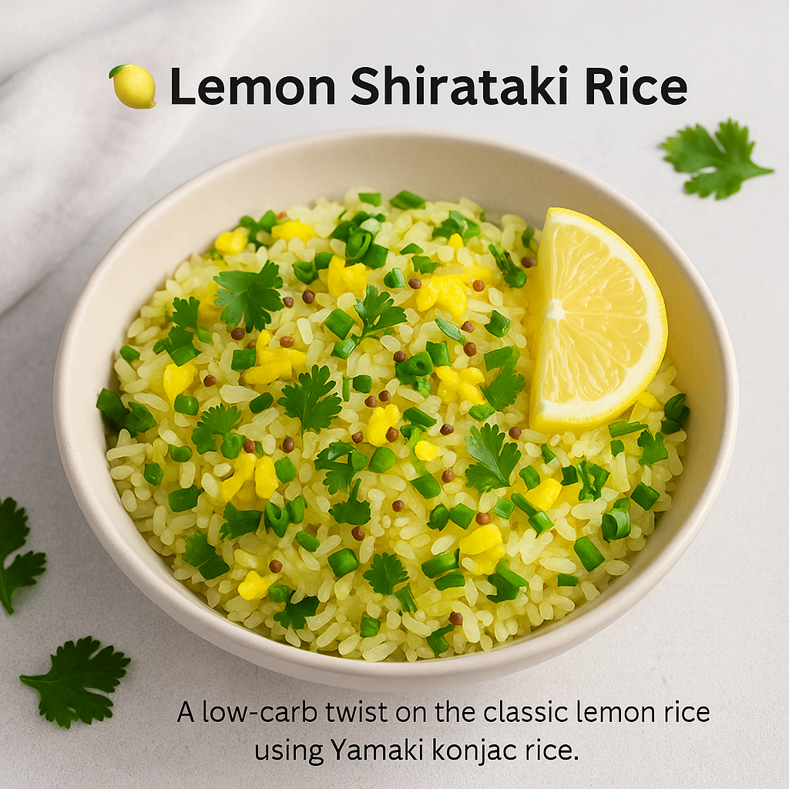

Bright, refreshing, and incredibly low in carbs – this Lemon Shirataki Rice is a guilt-free twist on a classic comfort dish. Made with Yamaki konjac rice, it’s perfect for keto, diabetic-friendly, and clean-eating diets.
🥬 Ingredients
- 1 pack Yamaki Shirataki rice (200g)
- 1 tsp olive oil or ghee
- 1/2 tsp mustard seeds
- 1 green chili, finely chopped (optional)
- 8–10 curry leaves
- 1 tbsp lemon juice (freshly squeezed)
- Salt to taste
- Fresh coriander, chopped
- 1/4 tsp turmeric powder
👨🍳 Instructions
- Prep the rice: Drain, rinse Shirataki rice under hot water. Boil for 2 minutes, then dry-roast in a pan for 3–4 mins until moisture is gone.
- Temper: In a pan, heat oil or ghee. Add mustard seeds and let them splutter. Add curry leaves and green chili.
- Mix: Add turmeric and salt. Stir quickly, then mix in the Shirataki rice.
- Lemon time: Turn off the heat and add lemon juice. Mix well.
- Garnish: Top with chopped coriander. Serve warm.
✅ Tips
- Adjust lemon and salt to taste for desired tanginess.
- Serve with grilled tofu or curd for a complete light meal.
- Skip green chili for a milder version.
Enjoy your lemon rice! Light, nourishing, and delicious – perfect any time of day.
📌 Want more healthy recipes? Read more blogs or become a Yamaki distribution partner.